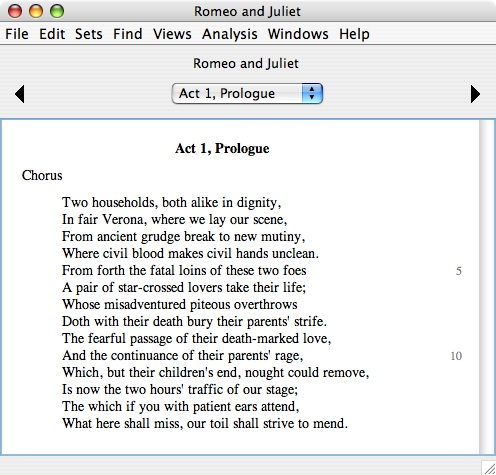
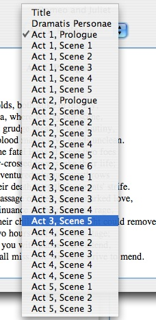
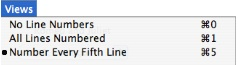
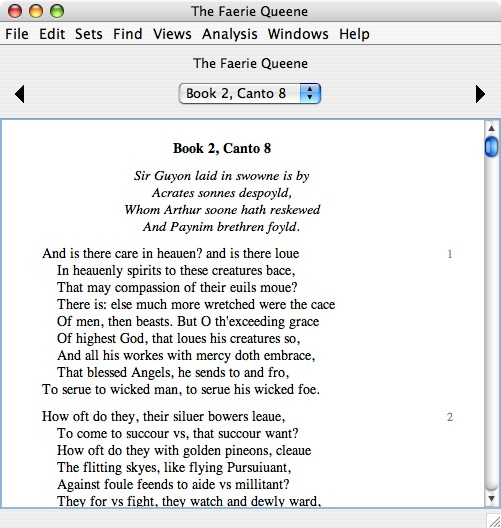
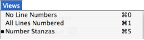
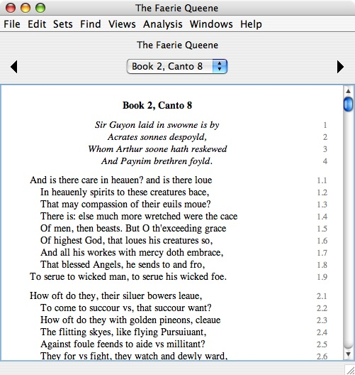

|
|
|
In the Table of Contents window, to open a work, double-click the work or one of its parts, or select the work or one of its parts and press Return or the Space Bar.
The following example shows the work display window for Romeo and Juliet, positioned at the prologue for Act 1:

The work display window shows one part of the work at a time. To navigate through the parts, use the controls at the top of the window. The left triangle goes to the previous part. The right triangle goes to the next part. The popup menu in the middle lets you go to any part. The example below shows what this popup menu looks like for Romeo and Juliet:

In this example, we are using the popup menu to navigate to Act 3, Scene 5.
When you are reading text, use the Space Bar to move forward through the text as you read. Pressing the Space Bar scrolls down one block of text, and when you get to the end of a work part, it advances to the beginning of the next part. You can read an entire work using only the Space Bar.
Select text using the usual mouse gestures. Press-and-drag sweeps out a text selection. Double-click selects a word, and this is the gesture you will use most often. Triple-click selects a line. Selected text can be copied to the system clipboard and pasted into another application.
Note that in the example from Romeo and Juliet pictured above, line numbers appear in the right margin of the text. By default, WordHoard numbers every fifth line of the text. To turn off line numbers, or to number every line, use the numbering commands in the "Views" menu:

Note the command key shortcuts Command-0, Command-1 and Command-5 to toggle between the three kinds of line numbering.
The Spenser corpus uses a different kind of numbering. In Spenser, by convention, stanzas are numbered by default instead of lines. The example below shows what stanza numbering looks like in Spenser:

When you are reading Spenser, the numbering commands in the "Views" menu are different:

Here's what numbering looks like in Spenser when all lines are numbered:

|
|
|